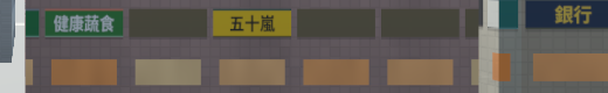
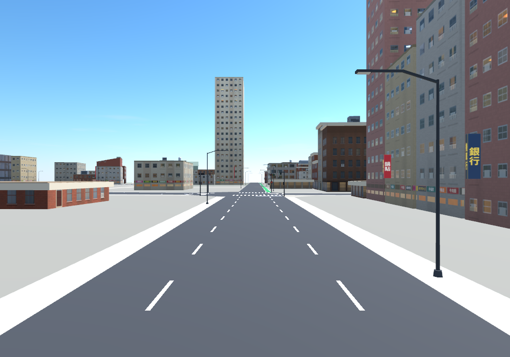
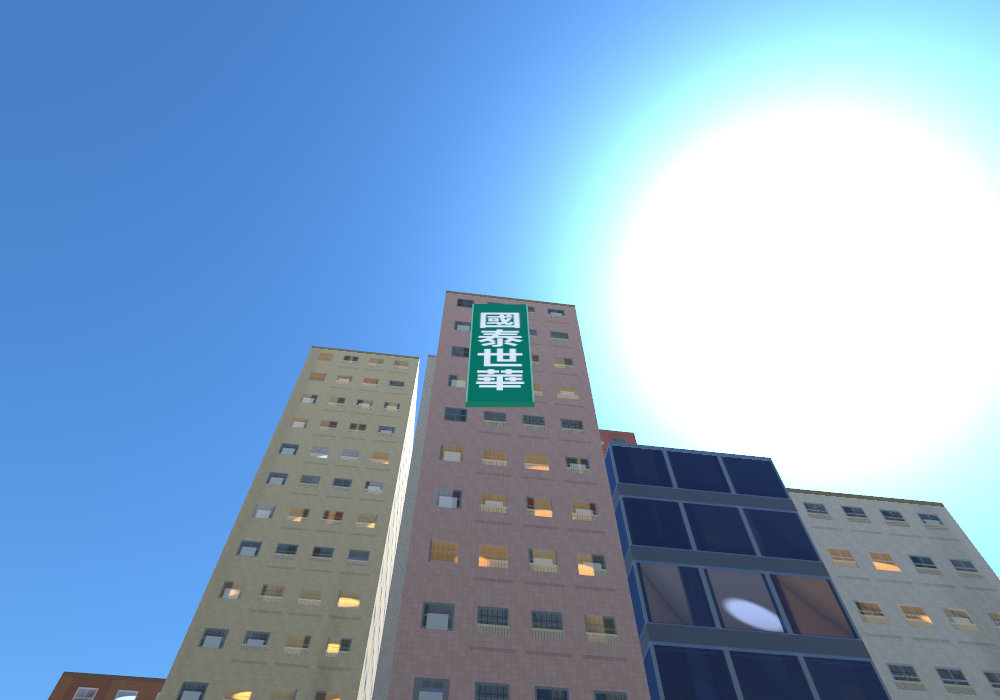

Sign Gallery 招牌
The street signs of Slop Taipei, shot in the game around Taipei 101: blades that stick out from the facades, band plates that sit flat on them, and tower signs on tall buildings. The names come from real Taiwanese streets — shops, food, banks — and each kind of shop has its own colour.

Band plates 衡陽路
Band plateEat · Drink · Bank
A row of flat plates on one facade: 健康蔬食 in green, 五十嵐 in yellow, 銀行 in dark blue. The plates read the right way round, not mirrored.

Street view 衡陽路
Blade + bandMixed
Looking west along 衡陽路： a dark-blue 銀行 blade and a red 鍋貼 blade stick out from the facades, with coloured band plates at ground level. Blades and bands together, in different colours.

Tower sign 國泰世華
Tower signBank
國泰世華 (Cathay United Bank): a tall plate flat on a 45 m tower face, reading top to bottom in white.